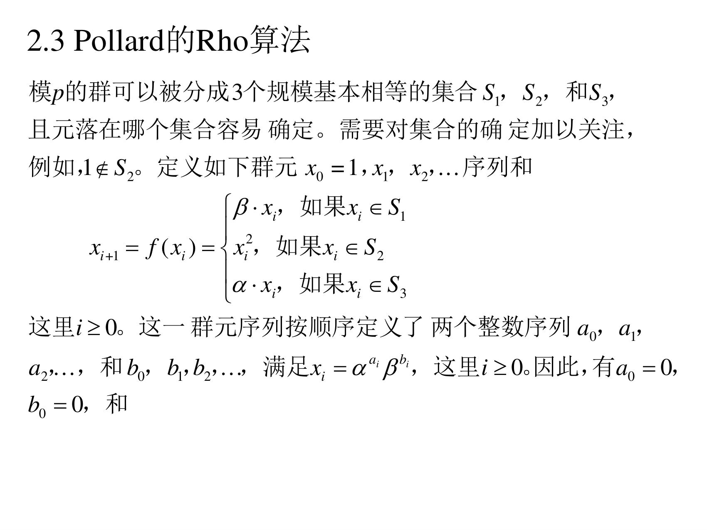
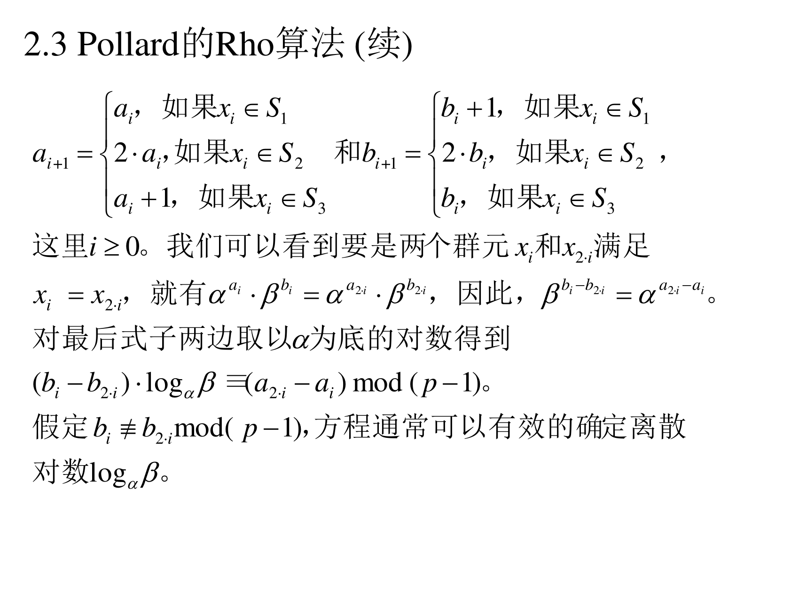
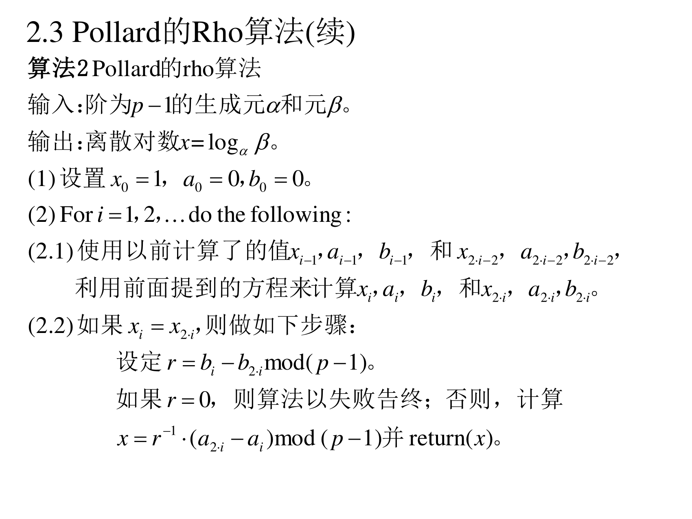
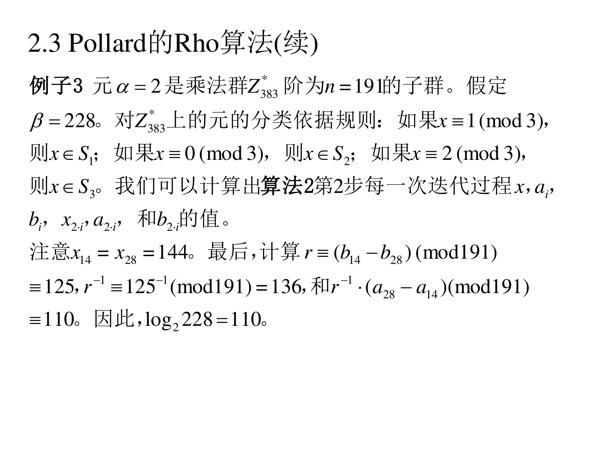
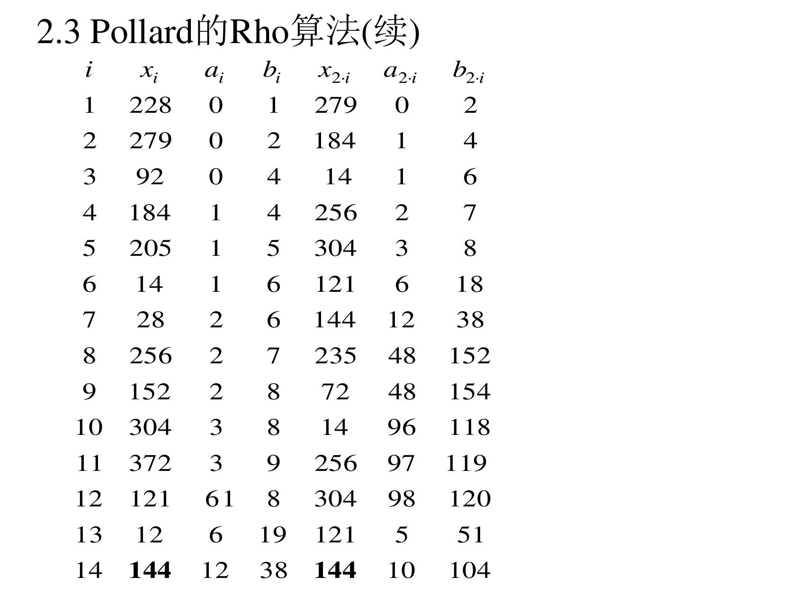

6.2.3 Pollard 的 rho 算法
小步大步的缺点是要存一张 p 大小的表。Pollard rho 的想法是：不存表，改成在群里"随机游走"，走到自己撞上自己为止。效果是时间差不多，但存储几乎为零。
6.2.3.1 随机游走的构造
（PPT 第 12–13 页）
模 p 的群可以被分成 3 个规模基本相等的集合 S1,S2,S3，且元落在哪个集合容易确定。需要对集合的确定加以关注，例如，1∈/S2。定义如下群元 x0=1,x1,x2,… 序列和
xi+1=f(xi)=⎩⎨⎧β⋅xi,xi2,α⋅xi,如果 xi∈S1如果 xi∈S2如果 xi∈S3
这里 i≥0。这一群元序列按顺序定义了两个整数序列 a0,a1,a2,… 和 b0,b1,b2,…，满足 xi=αaiβbi，这里 i≥0。因此有 a0=0，b0=0，和

（第 13 页）
ai+1=⎩⎨⎧ai,2⋅ai,ai+1,如果 xi∈S1如果 xi∈S2如果 xi∈S3bi+1=⎩⎨⎧bi+1,2⋅bi,bi,如果 xi∈S1如果 xi∈S2如果 xi∈S3
这里 i≥0。我们可以看到要是两个群元 xi 和 x2i 满足 xi=x2i，就有 αaiβbi=αa2iβb2i，因此，βbi−b2i=αa2i−ai。对最后式子两边取以 α 为底的对数得到
(bi−b2i)⋅logαβ≡(a2i−ai)mod(p−1)
假定 bi≡b2imod(p−1)，方程通常可以有效的确定离散对数 logαβ。

翻译成人话（分三步理解）：
(1) 为什么要同时跟踪 ai,bi：游走时我们要用 β 和 α 去乘/平方，但不知道 xi 到底等于 α 的几次方乘 β 的几次方——所以干脆把它们一起记下来，让 xi=αaiβbi 恒成立。看三条规则：
- 乘 β（S1）：指数 b 加 1，a 不变 ✔
- 平方（S2）：(αaβb)2=α2aβ2b，所以 a,b 都乘 2 ✔
- 乘 α（S3）：a 加 1 ✔
(2) 为什么"撞上"就能解出 x：若 xi=x2i，即 αaiβbi=αa2iβb2i，两边同除 βb2i：
βbi−b2i=αa2i−ai
左边 β=αx，所以左边 =αx(bi−b2i)。两边取对数（模 p−1）：
x(bi−b2i)≡a2i−ai(modp−1)
这是一条关于 x 的一元一次同余方程，两边乘 (bi−b2i) 的逆元就得到：
x≡(a2i−ai)(bi−b2i)−1(modp−1)
(3) 为什么是 xi 和 x2i 比较（而不是随便两个）：因为要把"找碰撞"变成不需要存储的操作。如果比较 xi 和 xj，你得把历史全存下来；而用"龟兔赛跑"——一只龟每次走一步（xi），一只兔每次走两步（x2i）——兔子迟早会追上龟（在环上套圈），此时两者相等。这样只要常数个变量。这是 Floyd 判圈法。
6.2.3.2 算法 2
（PPT 第 14 页）

算法 2（Pollard 的 rho 算法）
输入：阶为 p−1 的生成元 α 和元 β。
输出：离散对数 x=logαβ。
(1) 设置 x0=1，a0=0，b0=0。
(2) For i=1,2,… do the following:
(2.1) 使用以前计算了的值 xi−1,ai−1,bi−1 和 x2i−2,a2i−2,b2i−2，利用前面提到的方程来计算 xi,ai,bi 和 x2i,a2i,b2i。
(2.2) 如果 xi=x2i，则做如下步骤：
设定 r=bi−b2imod(p−1)。
如果 r=0，则算法以失败告终；否则，计算
x=r−1(a2i−ai)mod(p−1)
并 return (x)。
翻译成人话：第 (2.1) 步就是"龟走一步、兔走两步"（兔的两步用前一轮的值递推）。第 (2.2) 步是碰撞检测 + 解方程；r=0 意味着除数为零（逆元不存在），这时算法认输重来。
6.2.3.3 评述
（PPT 第 15 页）
评述.
(1) 计算离散对数的 Pollard 的 rho 算法是一个随机算法，平均运行时间与小步大步算法相当，但是相对小步大步算法存储需求可以忽略。
(2) 算法 2 很少情况会以失败结束，此外，计算过程也可以在 [1,p−2] 区间随机选择整数 a0 和 b0 并以 x0=αa0βb0 为起点。
翻译成人话：
- (1) rho 算法用概率换存储：撞上的位置是随机的，所以"平均"要跑约 p 步（这正是生日悖论的结论，第八讲会正式证明）。
- (2) 失败（r=0）或者起始点不好，可以换个随机起点重跑。这也是所有随机算法的共同套路：多试几次，失败概率可忽略。
6.2.3.4 例子 3（完整手算）
（PPT 第 16–17 页）
例子 3：元 α=2 是乘法群 Z383∗ 阶为 n=191 的子群。假定 β=228。对 Z383∗ 上的元的分类依据规则：如果 x≡1(mod3)，则 x∈S1；如果 x≡0(mod3)，则 x∈S2；如果 x≡2(mod3)，则 x∈S3。我们可以计算出算法 2 第 2 步每一次迭代过程 xi,ai,bi,x2i,a2i,b2i 的值。注意 x14=x28=144。


最后，计算 r≡(b14−b28)(mod191)≡125，r−1≡125−1(mod191)=136，和 r−1(a28−a14)(mod191)≡110。因此，log2228=110。
迭代表（PPT 第 17 页原表）：
| i |
xi |
ai |
bi |
x2i |
a2i |
b2i |
| 1 |
228 |
0 |
1 |
279 |
0 |
2 |
| 2 |
279 |
0 |
2 |
184 |
1 |
4 |
| 3 |
92 |
0 |
4 |
14 |
1 |
6 |
| 4 |
184 |
1 |
4 |
256 |
2 |
7 |
| 5 |
205 |
1 |
5 |
304 |
3 |
8 |
| 6 |
14 |
1 |
6 |
121 |
6 |
18 |
| 7 |
28 |
2 |
6 |
144 |
12 |
38 |
| 8 |
256 |
2 |
7 |
235 |
48 |
152 |
| 9 |
152 |
2 |
8 |
72 |
48 |
154 |
| 10 |
304 |
3 |
8 |
14 |
96 |
118 |
| 11 |
372 |
3 |
9 |
256 |
97 |
119 |
| 12 |
121 |
6 |
18 |
304 |
98 |
120 |
| 13 |
12 |
6 |
19 |
121 |
5 |
51 |
| 14 |
144 |
12 |
38 |
144 |
10 |
104 |
手把手复现前几行（验证规则真的在用）：
- 起点 x0=1，a0=0，b0=0。
- x0=1：1mod3=1 → 落在 S1 → x1=β⋅x0=228⋅1=228，a1=a0=0，b1=b0+1=1 ✔（表中第 1 行 x1=228,a1=0,b1=1）
- x1=228：228mod3=0 → 落在 S2 → x2=2282mod383=51984；51984−135×383=51984−51705=279，a2=2a1=0，b2=2b1=2 ✔
- x2=279：279mod3=0 → S2 → x3=2792mod383：2792=77841，77841−203×383=77841−77749=92，a3=0，b3=4 ✔
- x3=92：92mod3=2 → S3 → x4=α⋅x3=2×92=184，a4=a3+1=1，b4=b3=4 ✔
最后一步：
- 第 14 行出现 x14=x28=144，于是 i=14。
- r=b14−b28=38−104=−66≡125(mod191)（−66+191=125）。
- r−1=136（验证：125×136=17000=89×191+1 ✔）。
- x=r−1(a28−a14)=136×(10−12)=−272；−272+2×191=−272+382=110。得 log2228=110。
- 验证：2110mod383=228 ✔
补注意 PPT 第 17 页表格第 12 行：纸面上 a12 与 b12 靠得很近（"6" 和 "18"），容易被误读成 61 和 8。按递推规则应为 a12=2a11=6、b12=2b11=18（x11=372 落在 S2 里，平方后得到 x12=121）。这一点本讲义已核对过，照上表处理即可。